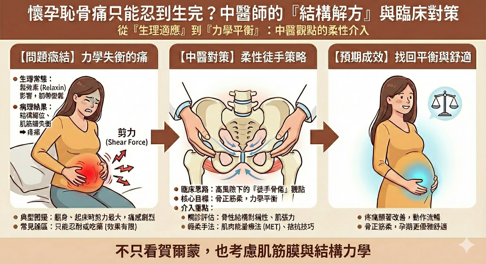

懷孕恥骨痛只能忍到生完？中醫師的「結構解方」與臨床對策
懷孕恥骨痛只能忍到生完？中醫師的「結構解方」與臨床對策
在臨床門診中，常遇到扶著腰、步履艱難的準媽媽。她們在產檢時，多半已從婦產科醫師口中了解到，這些關節不適主要源於「鬆弛素（Relaxin）」的影響，是身體為了迎接新生命、讓骨盆擴張所做的必要生理調適。
這是一個神聖且自然的過程，但也正因為韌帶變得鬆弛，身體對於「結構穩定」與「力學平衡」的需求反而變得更高。
然而，「鬆弛」是為了生產的生理常態，但「痛到無法翻身」，往往是肌筋膜失能與骨盆力學失衡的病理結果。從結構與力學的角度切入，我們其實可以做得更多。
📌 典型臨床表現：連翻身都是折磨
多數懷孕中後期的準媽媽，隨著孕肚隆起，身體負擔日益加重，持續性的「恥骨聯合不適」是常見的困擾，有些甚至會伴隨大腿內側（內收肌群）的強烈緊繃感。
這類恥骨酸痛常全天候干擾生活，尤其在「平躺翻身」與「起床起身」的瞬間，骨盆承受的剪力（Shear force）最大，疼痛往往最劇烈，甚至讓人對睡眠感到恐懼。
許多媽媽在此階段雖嘗試過熱敷、電療或拉伸，但若未針對核心力學問題與肌筋膜失能做處理，效果常有限；而為了胎兒安全，藥物控制也僅是權宜之計。
📌 臨床推理：高風險下的「徒手骨傷」思路
針對孕婦的治療，風險控管與擺位限制是首要考量：
・體位限制：孕肚限制了趴臥姿勢，許多傳統手法無法使用。
・風險控管：需避免強烈刺激，治療必須以絕對安全、柔性為主。
看似手段受限，但回歸人體生物力學觀點——「骨骼－肌肉－筋膜－神經」是環環相扣的整體。
恥骨聯合（Pubic Symphysis）不僅是骨盆前側的連接點，更是身體重力（由上而下）與地面反作用力（由下而上）的力線轉運樞紐。當恥骨聯合兩側的骨性結構產生微小錯位（骨錯縫），或是來自腹部核心肌群、內收肌群的張力向量不平衡（筋出槽）時，就會產生導致疼痛的剪力。
因此，即便不動用高風險手法，先從「力線平衡」與「軟組織張力」切入處理，能做的介入依然非常多。
📌 治療邏輯與成效分享
在確保母胎安全的前提下，採用結合現代生物力學的「輕柔徒手技巧」進行治療：
1. 觸診評估：確認恥骨聯合兩側骨性結構是否對稱，並檢查骨盆周圍肌筋膜（如內收肌、臀肌）的張力分佈。
2. 手法介入：
・肌肉能量療法 (Muscle Energy Technique, MET)：這是一種極為溫和的技術，藉由個案自身的肌肉力量進行等長收縮，以平衡骨盆肌張力，達到「骨正筋柔」的效果。
・配合 Shotgun Technique 或其他拮抗技巧：利用力學槓桿原理，針對恥骨聯合進行輕巧的復位與穩定。
通常經過上述方式處理後，多數媽媽的疼痛主觀感受都能顯著改善，測試日常起居動作也能更流暢，原本銳利的刺痛感轉為較可接受的輕微酸感或是完全消失。這顯示出：只要結構回正、張力平衡，身體自我修復的機制就能更好地運作。
📌 結語：溫柔地對待孕期的身體
懷孕期間，體內荷爾蒙的變化是為了讓胎兒順利通過產道，這是一段辛苦但偉大的旅程。
然而，身為臨床醫師，我們想傳達的是：荷爾蒙導致的「鬆弛」是常態，但結構錯位導致的「疼痛」則可以被管理。透過正確的生物力學評估與軟組織調整，協助孕媽咪找回骨盆的動態平衡，可以讓這段旅程走得更優雅、更少負擔。
---
📚 相關實證研究參考資料 (References)
1. 徒手治療對孕期骨盆痛的有效性
研究指出，整骨療法（Osteopathic Manipulative Treatment, OMT）與特定的徒手治療被證實能顯著降低孕期骨盆帶疼痛（PGP）並改善功能障礙，且安全性高。
Ref: Franke H, Franke JD, Belz S, Fryer G. "Osteopathic manipulative treatment for low back and pelvic girdle pain during pregnancy: a systematic review and meta-analysis." J Bodyw Mov Ther. 2017.
2. MET (肌肉能量療法) 的生理機轉
MET 利用患者自身的肌肉力量誘發神經生理機制，能有效放鬆過度緊繃的肌肉並矯正關節微小錯位，是治療孕期 PGP 常用的標準介入之一。
Ref: Wilson E, et al. "Muscle Energy Technique in patients with pregnancy-related pelvic girdle pain: A randomized controlled trial."
3. 恥骨聯合功能障礙 (SPD) 的治療指引
歐洲骨盆帶疼痛指引指出，適當的衛教結合針對性的運動控制與徒手治療，應作為第一線推薦的非藥物治療方式。
Ref: Vleeming A, et al. "European guidelines for the diagnosis and treatment of pelvic girdle pain." Eur Spine J. 2008.
(免責聲明：本文內容僅供衛教分享，每位個案身體狀況不同，實際治療計畫需由專業醫師評估後執行。)
#懷孕恥骨痛 #骨盆調整 #中醫徒手 #骨傷科 #產前保養 #MET #結構治療 #孕期不適
太初中醫診所 東門中醫
中醫師 黃彥鈞
